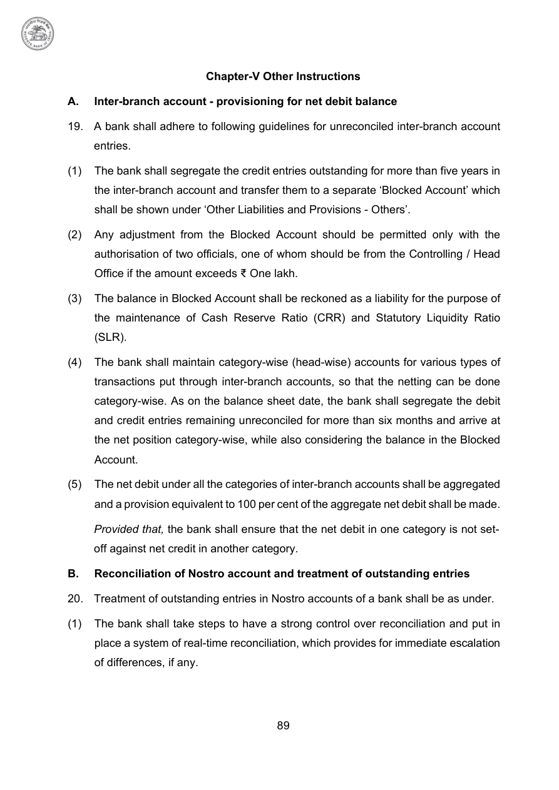

89
Chapter-V Other Instructions
A.
Inter-branch account - provisioning for net debit balance
Inter-branch account - provisioning for net debit balance
19. A bank shall adhere to following guidelines for unreconciled inter-branch account
entries.
(1)
The bank shall segregate the credit entries outstanding for more than five years in
The bank shall segregate the credit entries outstanding for more than five years in
the inter-branch account and transfer them to a separate ‘Blocked Account’ which
shall be shown under ‘Other Liabilities and Provisions - Others’.
(2)
Any adjustment from the Blocked Account should be permitted only with the
Any adjustment from the Blocked Account should be permitted only with the
authorisation of two officials, one of whom should be from the Controlling / Head
Office if the amount exceeds ₹ One lakh.
(3)
The balance in Blocked Account shall be reckoned as a liability for the purpose of
The balance in Blocked Account shall be reckoned as a liability for the purpose of
the maintenance of Cash Reserve Ratio (CRR) and Statutory Liquidity Ratio
(SLR).
(4)
The bank shall maintain category-wise (head-wise) accounts for various types of
The bank shall maintain category-wise (head-wise) accounts for various types of
transactions put through inter-branch accounts, so that the netting can be done
category-wise. As on the balance sheet date, the bank shall segregate the debit
and credit entries remaining unreconciled for more than six months and arrive at
the net position category-wise, while also considering the balance in the Blocked
Account.
(5)
The net debit under all the categories of inter-branch accounts shall be aggregated
The net debit under all the categories of inter-branch accounts shall be aggregated
and a provision equivalent to 100 per cent of the aggregate net debit shall be made.
Provided that, the bank shall ensure that the net debit in one category is not set-
off against net credit in another category.
B.
Reconciliation of Nostro account and treatment of outstanding entries
Reconciliation of Nostro account and treatment of outstanding entries
20. Treatment of outstanding entries in Nostro accounts of a bank shall be as under.
(1)
The bank shall take steps to have a strong control over reconciliation and put in
The bank shall take steps to have a strong control over reconciliation and put in
place a system of real-time reconciliation, which provides for immediate escalation
of differences, if any.